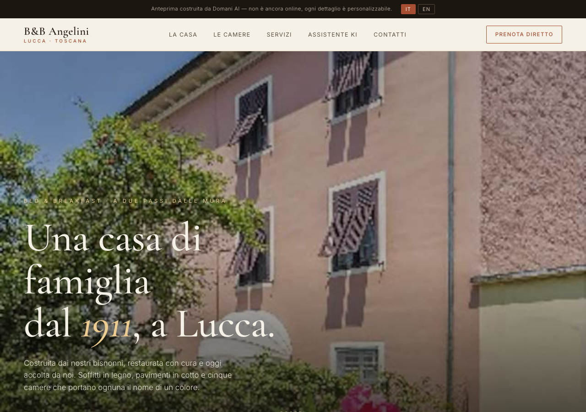
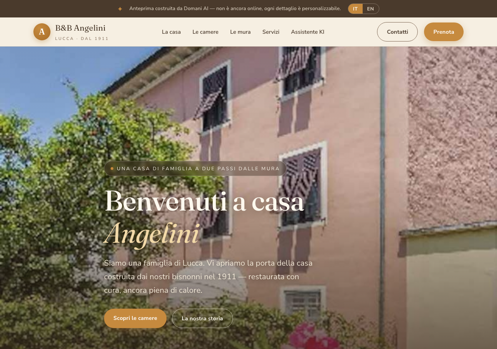

Con le vostre foto, le vostre camere e la storia della casa del 1911. Questa è solo la carrozzeria — l'aspetto: colori, testi, foto e ordine delle sezioni si cambiano tutti, su misura. Scegliete lo stile che vi somiglia di più.

Elegante e ariosa, come una rivista di viaggio. Grande spazio alle foto, tipografia raffinata, la storia della casa in primo piano.
Guarda questa versione →
Accogliente e familiare, come entrare in casa vostra. Toni caldi, voce personale, l'atmosfera intima di un B&B toscano.
Guarda questa versione →In tutte e due c'è l'assistente KI: risponde agli ospiti 24 ore su 24, in italiano, inglese, tedesco e francese, e trasforma le richieste della sera in prenotazioni dirette — senza commissioni. Lo stile si sceglie; il motore lavora comunque, anche mentre dormite.